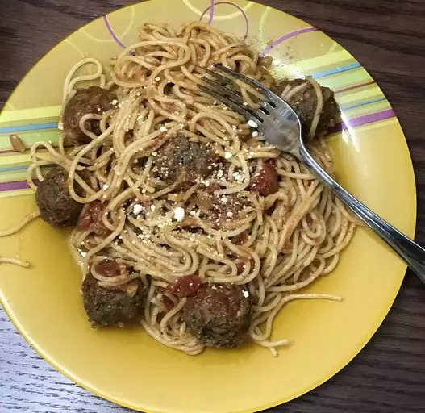

Spaghetti and Meatballs

Description
Spaghetti and meatballs is known as perhaps the most classic example
of pasta. This tasty Italian dish is famous all over the world and
enjoyed by millions of people. This delicious recipe shows you how to
make spaghetti and meatballs with your favorite tomato sauce.
Ingredients
- Spaghetti noodles
- Olive oil
- Meatballs
- Salt and pepper
- Onions
- Garlic
- Tomato sauce
Steps
- Bring a pot of water to a boil and put spaghetti in pot
- Dice onions
- Chop garlic
- Drizzle olive oil on pan and put in onions and garlic
- Once softened, put aside onions and garlic
- Put meatballs into pan and cook until brown
- Drain spaghetti noodles once ready and combine with rest of food
- Mix in sauce and add salt and pepper